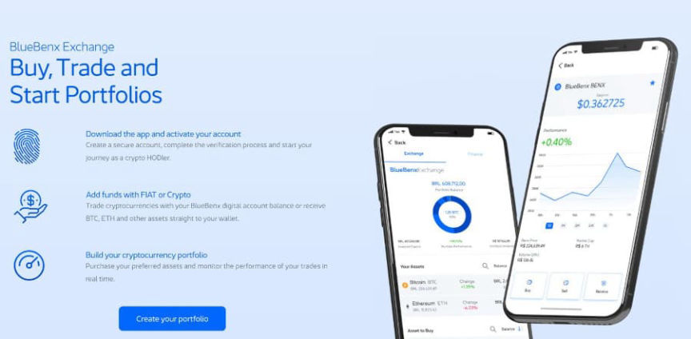
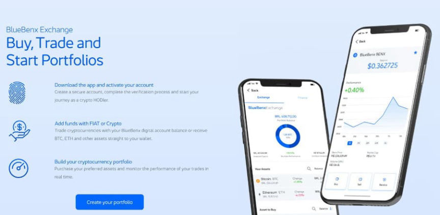

Brazilian Crypto Investment Platform Suspends Withdrawals
~2 min read | Published on 2022-08-15, tagged Exchange, Suspends-Withdrawals using 264 words.
The Brazilian cryptocurrency investment program BlueBenx has suspended withdrawals after losing $31 million in an “extremely aggressive hack.”
BlueBenx is “a Brazilian fintech that, since its foundation in 2017, has in its DNA the development of products and solutions related to blockchain and cryptocurrencies. We are on the way to making the Cross Chain concept an accessible and simple market practice.” The company offered users up to 66% returns. Now, all 22,000 of its users cannot withdraw any of their funds.
In addition to a cryptocurrency rewards program, BlueBenx offered its users a way to exchange cryptocurrencies, including Bitcoin and Ethereum.

In an email to customers, BlueBenx staff wrote:
“Last week we suffered an extremely aggressive hack in our liquidity pools on the cryptocurrency network, after incessant attempts at resolution, today we started our security protocol with the immediate suspension of operations of BlueBenx Finance products, including withdrawals, redemptions, deposits, and transfers.”
The company’s lawyer, Assuramaya Kuthumi, said the company lost $32 million in the hack. Other news outlets, including Coin Telegraph, cited an unnamed investor who doubted the hack had happened.
“I think there’s a high probability of it being a scam because this whole hacker attack story seems like a lot of bullshit, something they invented,” the purportedly real investor wrote.
Coin Telegraph:
“The lack of trust among investors stems from the fact that numerous crypto platforms — that offer high yields — have alleged similar scenarios in the past, wherein they end up halting funds withdrawal while hiding their incompetency in fulfilling the previously promised returns to the users.”
BlueBenx is “a Brazilian fintech that, since its foundation in 2017, has in its DNA the development of products and solutions related to blockchain and cryptocurrencies. We are on the way to making the Cross Chain concept an accessible and simple market practice.” The company offered users up to 66% returns. Now, all 22,000 of its users cannot withdraw any of their funds.
In addition to a cryptocurrency rewards program, BlueBenx offered its users a way to exchange cryptocurrencies, including Bitcoin and Ethereum.

BlueBenx offered users the ability to exchange cryptocurrency and earn rewards.
In an email to customers, BlueBenx staff wrote:
“Last week we suffered an extremely aggressive hack in our liquidity pools on the cryptocurrency network, after incessant attempts at resolution, today we started our security protocol with the immediate suspension of operations of BlueBenx Finance products, including withdrawals, redemptions, deposits, and transfers.”
The company’s lawyer, Assuramaya Kuthumi, said the company lost $32 million in the hack. Other news outlets, including Coin Telegraph, cited an unnamed investor who doubted the hack had happened.
“I think there’s a high probability of it being a scam because this whole hacker attack story seems like a lot of bullshit, something they invented,” the purportedly real investor wrote.
Coin Telegraph:
“The lack of trust among investors stems from the fact that numerous crypto platforms — that offer high yields — have alleged similar scenarios in the past, wherein they end up halting funds withdrawal while hiding their incompetency in fulfilling the previously promised returns to the users.”